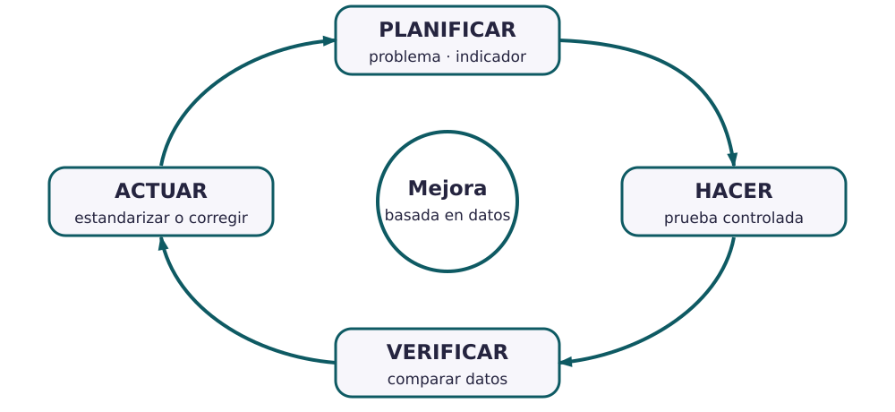

Contenido
Hoy conseguirás: convertir un problema de calidad de vuestro producto en un plan de mejora que se pueda comprobar con números.
«Mejorar la calidad» no es un plan
Una empresa no mejora deseándolo. Necesita saber qué falla, cuánto falla ahora, cuánto quiere que falle y cómo va a comprobar si su cambio funciona. El ciclo PDCA (o de Deming) ordena esos pasos en cuatro fases que se repiten. PDCA son las iniciales en inglés de Plan, Do, Check, Act: planificar, hacer, verificar y actuar.

AmpliarLa botella que pierde agua, fase a fase
Planificar (P)
- Problema: en la prueba de salida, 4 de cada 100 botellas pierden agua.
- Línea base: 4 % de botellas con fuga (así estamos hoy).
- Causa que sospechamos: la junta del tapón se coloca torcida al montar.
- Indicador: porcentaje de botellas que pierden agua en la prueba (%).
- Objetivo: bajar del 1 % sin que aparezcan otros fallos.
- Acción piloto: un útil (una pieza guía que coloca la junta siempre en su sitio), probado solo en las 500 botellas del turno de mañana.
Hacer (D)
Se monta con el útil en ese turno y se apunta, botella a botella, si pasa la prueba.
Verificar (C)
Aquí verificar significa comprobar con datos si el cambio ha funcionado (no es verificar un instrumento). Se calcula el mismo indicador en esas 500 botellas y se compara con la línea base (4 %) y con el objetivo (1 %). Resultado: 3 de 500, es decir, 0,6 %.
Actuar (A)
- Si baja del 1 %: se usa el útil en todos los turnos y se cambian las instrucciones de montaje.
- Si mejora pero no llega: se corrige la idea y se repite el ciclo.
- Si no mejora: la causa era otra; se vuelve a planificar buscando otra causa.
Palabras nuevas
- Línea base
- Cuánto falla ahora, con un número. 4 de cada 100.
- Indicador
- Lo que vais a medir para saber si mejora, con su unidad. % de botellas con fuga.
- Objetivo
- El valor del indicador al que queréis llegar. Menos del 1 %.
- Acción piloto
- El cambio que se prueba primero en una parte pequeña de la producción.
- Estandarizar
- Convertir el cambio que funciona en la forma normal de trabajar.
Indicador, objetivo y acción no son lo mismo
Indicador: lo que mido. Objetivo: a dónde quiero llegar. Acción: lo que cambio. Es la confusión más frecuente en este apartado.
- Partid del problema de calidad del expediente o de un fallo que hayáis detectado en los apartados 4 y 5.
- Rellenad Planificar: problema con número, línea base, causa que sospecháis, indicador con unidad, objetivo y acción piloto.
- Rellenad Hacer y Verificar: cómo se prueba, qué se apunta y con qué se compara.
- Rellenad Actuar: qué haréis si llega al objetivo, si mejora poco y si no mejora.
Escribe una decisión del plan que propusiste tú, la otra opción que se descartó y por qué (con un dato, una medida o una fuente), y en qué apartado del dosier aparece.
Cómo sabéis que está bien
- ☐ El problema tiene un número (línea base).
- ☐ El indicador tiene unidad y el objetivo es un valor de ese indicador.
- ☐ La acción ataca la causa que sospecháis.
- ☐ Actuar dice qué hacéis en cada resultado posible.
Compruébalo
Ordena las cuatro fases del ciclo PDCA.
- Planificar: problema con número, causa, indicador, objetivo y acción
- Hacer: probar el cambio solo en una parte pequeña y apuntar los resultados
- Verificar: comparar los datos con la línea base y con el objetivo
- Actuar: el cambio se queda, se corrige o se busca otra causa